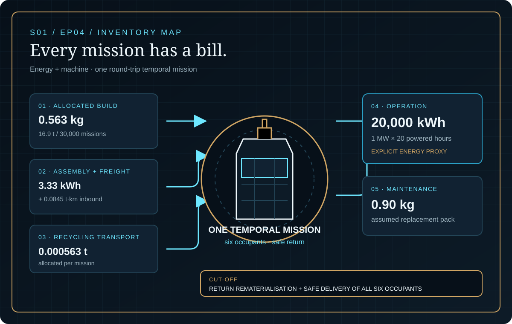
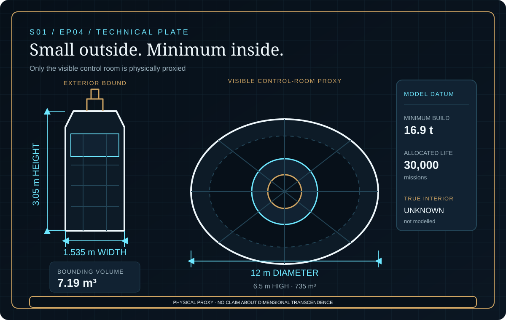
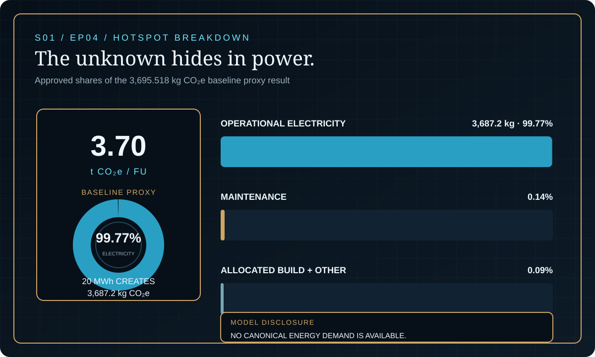

EPISODE #04 · SEASON I — MACHINES & WORLDS
TARDIS
What footprint can be reconstructed when the temporal drive has no verifiable energy model?
Science fiction, reconstructed through life-cycle logic. Impossible technologies, reconstructed as traceable systems.
THE SUBJECT
The box ends. The model begins.
The approved episode defines the TARDIS as a temporal-transport machine carrying six occupants from London 2026 to London 3026 and back. One measurable service contains two temporal legs, two completed materialisations, 20 powered hours and safe return to the same departure place and date.
The exterior is bounded at 3.05 m high and 1.535 m wide, while only the visible control room is physically represented: a 12 m diameter, 6.5 m high, 735 m³ proxy. The true interior, dimensional transcendence and the temporal mechanism remain unknown. A 16.9 t minimum surrogate, maintenance, logistics and electricity make the mission traceable without inventing its physics.
6 occupants
The console and functional unit are designed around a six-person crew.
20 powered hours
The mission window converts the baseline 1 MW load into 20 MWh.
16.9 t
The minimum physical surrogate is allocated across 30,000 missions.
99.77%
Operational electricity dominates the approved baseline proxy result.
VISUAL MODEL
Small outside. Minimum inside.
The physical proxy connects allocated construction, maintenance and logistics to one explicit 20 MWh operating window.


DETAILED LIFE CYCLE INVENTORY
Every mission has a bill
The stable LCI flow identifiers, activity data, allocation and modelling status reproduce the approved episode without adding precision.
| Stage | Component / activity | Activity data | Climate change | Modelling basis |
|---|---|---|---|---|
| Raw materials | LCI-01–06 · Modelled build materials | 0.563 kg/mission | Part of build + other: 0.09% | 16.9 t minimum surrogate allocated across 30,000 missions. |
| Manufacturing | LCI-07 · Assembly electricity | 3.33 kWh/mission | Part of build + other: 0.09% | 100 MWh allocated across 30,000 missions. |
| Transport | LCI-08 · Inbound UK freight | 0.0845 t·km/mission | Part of build + other: 0.09% | 16.9 t × 150 km allocated across 30,000 missions. |
| Operation | LCI-09 · Operational electricity | 20,000 kWh | 3,687.2 kg CO₂e · 99.77% | Explicit baseline proxy: 1 MW average load × 20 powered hours. |
| Maintenance / replacement | LCI-10–13 · Replacement pack | 0.90 kg/mission | 0.14% of baseline | Assumed maintenance parts. |
| End of life | LCI-14 · Recycling transport | 0.000563 t/mission | Part of build + other: 0.09% | 16.9 t allocated across 30,000 missions. |
| Approved baseline proxy result | 3,695.518 kg CO₂e | One round-trip temporal mission. | ||
Physical proxy
0.90 t painted timber, 8.0 t modelled metals, 4.0 t electrical hardware, 1.0 t IT, 2.0 t glass and 1.0 t plastics.
Integration
100 MWh of assembly electricity and 2,535 t·km of inbound UK freight are allocated across 30,000 missions.
Explicit exclusions
Dimensional transcendence, vortex or black-hole energy, unknown interior rooms, destination consequences and avoided travel.
Cut-off event
Return rematerialisation and safe delivery of all six occupants at the departure place and date.
EMISSION FACTOR LEDGER
Sources before spectacle
All displayed factors are the UK Government 2026 values recorded in the approved episode. Fiction defines only the subject.
| ID | Activity | Factor | Unit | Role in model |
|---|---|---|---|---|
| EF01 | UK electricity generation | 0.13096 | kg CO₂e/kWh | Generation component. |
| EF02 | Grid transmission & distribution | 0.01299 | kg CO₂e/kWh | Network-loss component. |
| EF03+04 | Upstream electricity | 0.04041 | kg CO₂e/kWh | 0.03682 generation WTT + 0.00359 T&D WTT. |
| EF05 | Modelled materials | 0.26950–24.86548 | kg CO₂e/kg | Minimum surrogate and maintenance parts. |
| EF06 | Average non-refrigerated HGV | 0.10356 | kg CO₂e/t·km | Inbound UK freight. |
| EF07 | Recycling transport | 4.65358 | kg CO₂e/t | Allocated end-of-life flow. |
Full lifecycle electricity factor = 0.13096 + 0.01299 + 0.03682 + 0.00359 = 0.18436 kg CO₂e/kWh.
The operational energy flow is explicit because no canonical demand is available. No emission factor is invented for time travel.
HOTSPOT
The unknown hides in power
Operational electricity contributes 99.77% of the approved baseline. Maintenance contributes 0.14%, while allocated build and other flows contribute 0.09%.

Baseline proxy
3,695.518 kg CO₂e
3.70 t CO₂e per functional unit.
Operational electricity
3,687.2 kg · 99.77%
20 MWh controls the baseline.
Maintenance
0.14%
A 0.90 kg assumed replacement pack per mission.
Build + other
0.09%
Allocated materials, assembly, freight and recycling transport.
SENSITIVITY A · POWER DEMAND
Energy moves the answer
Low · 0.2 MWh: 0.0452 t CO₂e.
Baseline · 20 MWh: 3.70 t CO₂e.
High · 2,000 MWh: 369 t CO₂e.
The high-to-low result spans more than 8,000×. Only operational electricity changes.
SENSITIVITY B · ELECTRICITY BOUNDARY
Boundaries change the number
Generation only: 2.63 t CO₂e.
Generation + T&D: 2.89 t CO₂e.
Full lifecycle: 3.70 t CO₂e.
The upstream addition is 0.81 t CO₂e versus generation plus T&D. Energy remains fixed at 20 MWh.
INTERPRETATION
Uncertainty is the hotspot
The functional unit creates one stable service, while the physical reconstruction stops at the minimum visible control-room proxy. Operational electricity then contributes 99.77% of the baseline.
Power demand spans two orders of magnitude on either side of the baseline. A single precise TARDIS footprint would therefore be false confidence.
THE VERDICT
“A time machine’s footprint begins where physics becomes measurable.”